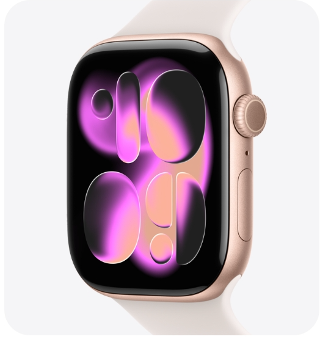
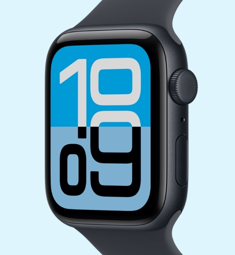
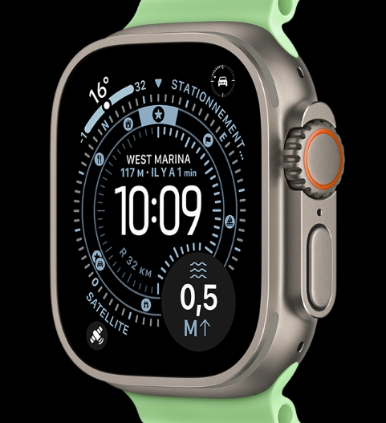

Apple Watch Series 11
La montre ultime pour votre santé
A partir de 449 €

Apple Watch Series 11
La montre ultime pour votre santé
A partir de 269 €

Apple Watch Series 11
La montre ultime pour votre santé
A partir de 899 €
Tant de raisons d’acheter
votre Apple Watch
chez Apple.
Acheter une Apple Watch .
Apple Trade in
Economisez avec
Economisez avec
Apple trade ln .
Faites reprendre un apparel éligible et
obtenez un cr"dit sur l'achat de votre
prochaine Apple watch²
Livraison et gratuit
Livraison gratuite
Et retours gratuits. Validez votre commande
pour connaitres les dates de Livraison .
Decouvrez l'Apple Watch
Les indispensables
Apple Watch.
Tous les accessoires Apple Watch . L'heure du changement.
Découvrez les matériaux , styles et couleurs
Achetez des bracelets Apple Watch .

Faits pour s'entendre .
Associer l’Apple Watch à l’iPhone ouvre tout un monde de fonctionnalités
qui multiplient les capacités de chacun des appareils. Vous pouvez faire
une multitude de choses comme créer un itinéraire personnalisé avec Plans
sur votre iPhone, puis le télécharger sur votre montre pour l’utiliser
n’importe quand.

L’Apple Watch enrichit votre expérience Fitness+ en affichant à l’écran des données personnalisées en temps réel, comme votre fréquence cardiaque, les calories brûlées et les anneaux Activité23. Et vous profitez en toute liberté de vos séances de marche, de course ou de méditation audioguidées en n’utilisant que votre montre et des AirPods.